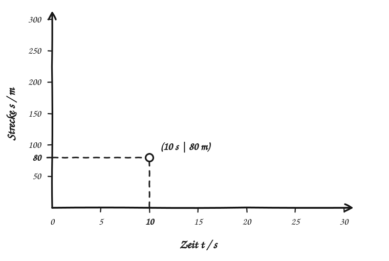

Diagramme üben
Punkte in ein Diagramm eintragen
Aus zwei Messwerten wird ein Ort im Koordinatensystem.
Ein Sprinter läuft geradeaus. Wir messen die Zeit seit dem Start und die zurückgelegte Strecke. Diese vereinfachten Messwerte nutzen wir als Beispiel:
| Zeit t | Strecke s |
|---|---|
| 0 s | 0 m |
| 10 s | 80 m |
| 20 s | 170 m |
| 30 s | 250 m |
So findest du einen Punkt
Im s(t)-Diagramm steht die Zeit t auf der waagerechten Achse und die Strecke s auf der senkrechten Achse. Für (10 s | 80 m) gehst du vom Ursprung auf der Zeitachse bis 10 s. Von dort gehst du senkrecht nach oben bis zur Höhe von 80 m. An diese Stelle setzt du einen Punkt.

Die Schreibweise (t | s) bedeutet also: erst nach rechts zur Zeit, dann nach oben zur Strecke. Jeder Punkt gehört zu genau einem Wertepaar. Die Werte zwischen den Messungen kennen wir hier nicht genau; verbinde die Punkte deshalb noch nicht zu einer Kurve.
Jetzt du: zwei Punkte eintragen
Setze die Punkte (10 s | 80 m) und (20 s | 170 m) in das leere Diagramm. Klicke oder tippe zweimal hinein. Du kannst einen Punkt danach mit der Maus oder dem Finger verschieben.
Dein Diagramm
Deine Punkte
Setze den ersten Punkt.